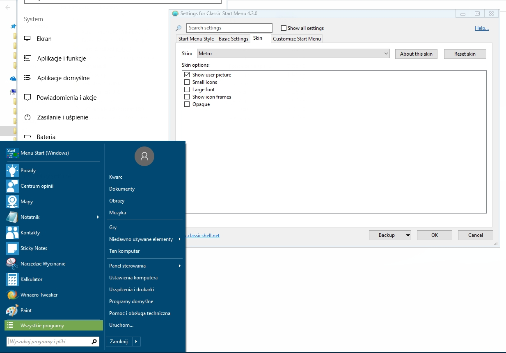
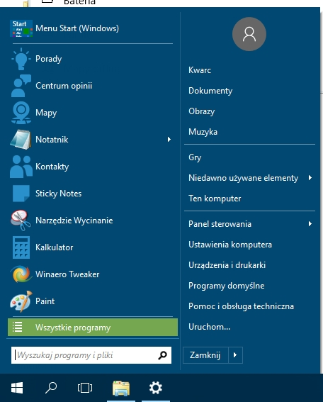

| Classic Shell http://www.classicshell.net/forum/ |
|
| Hide Icon Frames http://www.classicshell.net/forum/viewtopic.php?f=7&t=7655 |
Page 1 of 1 |
| Author: | Kwarc [ Mon Jun 05, 2017 10:22 am ] |
| Post subject: | Hide Icon Frames |
I wanted to hide icon frames, but switching options doesn't do anything. Is it a bug or what?  |
|
| Author: | Gaurav [ Mon Jun 05, 2017 9:10 pm ] |
| Post subject: | Re: Hide Icon Frames |
In the search box at the top of the Settings window, type: invert and check the setting "Invert Metro icon color". |
|
| Author: | Kwarc [ Tue Jun 06, 2017 12:37 am ] |
| Post subject: | Re: Hide Icon Frames |
OK, it's almost good now, but there is one thing... can I change color of metro icons?  |
|
| Author: | Gaurav [ Tue Jun 06, 2017 4:26 am ] |
| Post subject: | Re: Hide Icon Frames |
Metro icons follow the system color which you can set the Settings app. |
|
| Author: | Kwarc [ Tue Jun 06, 2017 6:13 am ] |
| Post subject: | Re: Hide Icon Frames |
OK, but why I am not allowed to just hide tiles? |
|
| Author: | Gaurav [ Tue Jun 06, 2017 6:21 am ] |
| Post subject: | Re: Hide Icon Frames |
You are allowed. Where do you want to hide tiles? |
|
| Author: | Kwarc [ Tue Jun 06, 2017 6:40 am ] |
| Post subject: | Re: Hide Icon Frames |
From Metro icons in Start Menu, I've tried unchecking 'show icon frames', but it doesn't work :/ |
|
| Author: | Gaurav [ Tue Jun 06, 2017 8:25 am ] |
| Post subject: | Re: Hide Icon Frames |
"Show icon frames" only controls the background square added behind each Metro icon. To hide Metro icons entirely from the Start menu, type: apps in the Search box at the top of the Settings window. Uncheck the options as you want: - Show Metro apps (this hides apps from "All Programs") - Show recent Metro apps (this hides apps from the Recent/Frequently used list in the main Start menu) - Search Metro apps (this hides them from search results). |
|
| Author: | Kwarc [ Tue Jun 06, 2017 12:03 pm ] |
| Post subject: | Re: Hide Icon Frames |
But I don't want to remove metro icons from Star Menu, I just want to hide their background and as I said in first post unchecking "show icon frames" doesn't work :/ |
|
| Author: | Ivo [ Tue Jun 06, 2017 6:19 pm ] |
| Post subject: | Re: Hide Icon Frames |
But in your second screenshot the icons don't have a background. Mission accomplished? |
|
| Page 1 of 1 | All times are UTC - 8 hours [ DST ] |
| Powered by phpBB® Forum Software © phpBB Group https://www.phpbb.com/ |
|